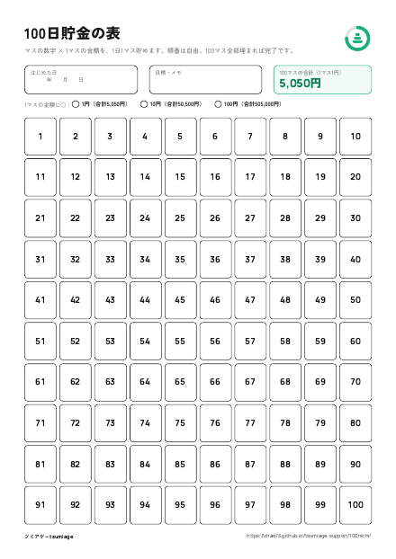

100日貯金のやり方と表
100マスを100日で埋める、短めの貯金チャレンジです。1マスの金額を変えれば、目標に合わせて大きさを選べます。
5,050円1マス1円で100日続けたときの合計
100日貯金のやり方
- 1マスの金額を決める。 1円・10円・100円のどれかにします。合計はそれぞれ5,050円、50,500円、505,000円です。
- 毎日1マス選んで貯める。 マスの数字 × 1マスの金額を貯金します。
- 入れたマスに印をつける。 順番は自由です。
- 100マス埋まったら完了。 1マス1円なら5,050円です。
合計 ＝ 1マスの金額 ×（1＋2＋…＋100）＝ 1マスの金額 × 5,050
100日貯金の表（チェックできます）
1マスの金額を選ぶと、マスの金額と合計が変わります。
0円0 / 100 マス（全部で 5,050円）
マスを押すとチェックできます。チェックはこのブラウザにだけ保存されます。
100日貯金はいくら貯まる？早見表
| 経過 | 1マス1円 | 1マス10円 | 1マス100円 |
|---|---|---|---|
| 10日目まで | 55円 | 550円 | 5,500円 |
| 30日目まで | 465円 | 4,650円 | 46,500円 |
| 50日目まで | 1,275円 | 12,750円 | 127,500円 |
| 70日目まで | 2,485円 | 24,850円 | 248,500円 |
| 100日目まで | 5,050円 | 50,500円 | 505,000円 |
基本は1マス1円（合計5,050円）です。10円・100円は、同じ表で金額を大きくした例です。
4つの進め方
順番どおり
1日目から順に増やします。最後の10日間がいちばん大きく、合計の約2割（955円 ×1マスの金額）を占めます。
逆から
100から始めて減らします。最初にがんばれば、あとは楽になります。
好きなマスから
その日に出せる金額のマスを選びます。
おまかせ
残っているマスからランダムに選びます。アプリの「おまかせ」ボタンでも選べます。
100日貯金を続けるコツ
- 目標から逆算して1マスの金額を決めます。5万円なら1マス10円（50,500円）が近い数字です。
- 100日はおよそ3か月と少し。季節の区切りやボーナス月に合わせて始めると、終わりが見えやすくなります。
- 1日休んでも、翌日に2マス埋めれば追いつけます。

100日貯金の表（A4・印刷用）
1〜100の100マスに、1マスの金額（1円・10円・100円）に丸をつける欄と、それぞれの合計を入れた A4 1枚の表です。ダウンロードは無料です。
iPhone でマスを埋めて記録する
ツミアゲでは、100日貯金をこの表と同じマスで記録できます。ホーム画面やロック画面のウィジェットからワンタップで記録でき、広告は出ません。
よくある質問
100日貯金でいくら貯まりますか？
1マス1円なら5,050円です。1マス10円なら50,500円、1マス100円なら505,000円になります。
途中で1日できなかったら？
翌日に2マス埋めれば大丈夫です。100マス全部を埋めれば合計は同じです。
52週貯金や365日貯金との違いは？
期間が100日と短いことです。まず100日貯金で慣れてから、1年がかりのチャレンジに進むこともできます。